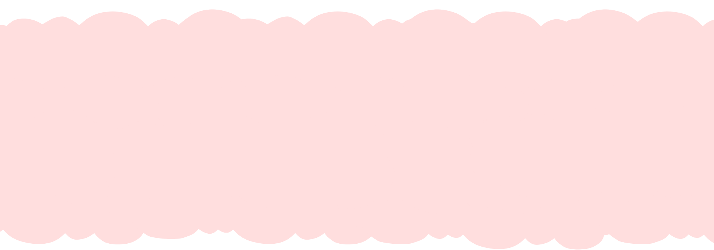
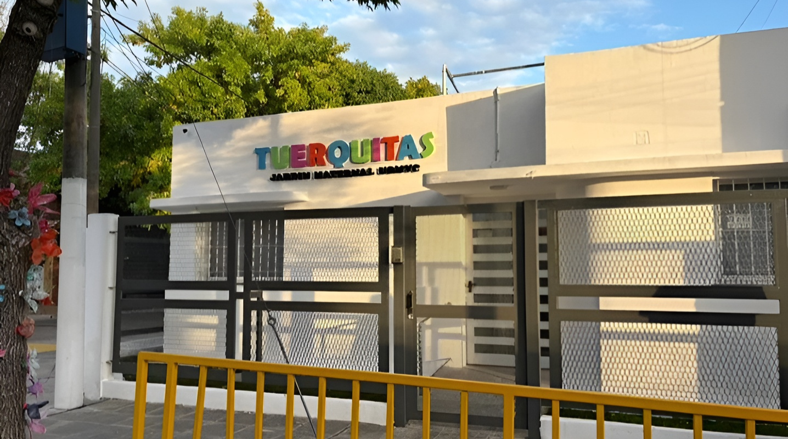

Aprender jugando
Pintura y colores
Ritmo y canciones
Cuentos cortitos
Movimiento guiado
Sembrar y cuidar
Sabores y texturas
Descubrir el mundo
Juego grupal
Tiempo tranquilo

Contacto por Correo

tuerquitasjardinmaternaluomvc@gmail.com
+54 9 3400 000000
@tuerquitasjardin
Jardin Tuerquitas